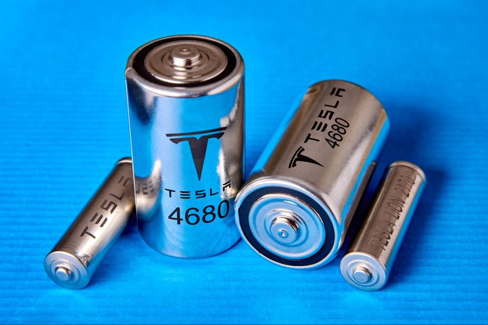
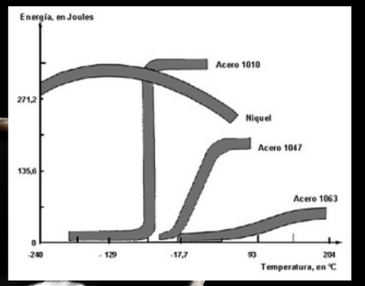
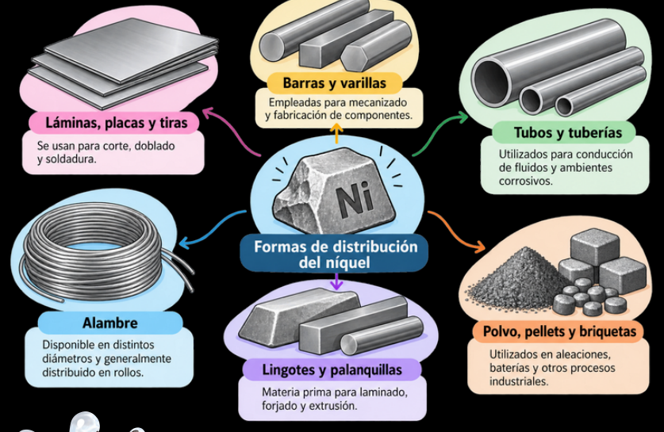

Caso de aplicación: baterías de Tesla

Tesla ha empleado cátodos NCA (Níquel-Cobalto-Aluminio) y, más recientemente, NMC (Níquel-Manganeso-Cobalto) en modelos de mayor autonomía: Model S, Model X y versiones Long Range del Model 3.
Método de identificación / designación
El Sistema UNS (Unified Numbering System) es el estándar universal en manufactura, establecido por ASTM y SAE. Consta de una letra más cinco dígitos que identifican la composición.
- UNS: composición.
- ASTM: especificación de forma / proceso.
- W.Nr.: norma europea (DIN).
Deben coincidir en la documentación de manufactura para trazabilidad y control.
¿Cómo se identifica el níquel en la designación UNS?
1) Elige la letra de la familia:
| UNS | Material |
|---|
Equivalencias frecuentes
W.Nr. 2.4060 / 2.4061 / 2.4066 / 2.4068
ASTM por forma de producto
Propiedades mecánicas
Dependen de su composición, características metalúrgicas y proceso de fabricación.
Escala de 0 a 600 MPa.

Aplicaciones principales
Formas de distribución
La forma de distribución se selecciona según el proceso de fabricación y las características del producto final.
